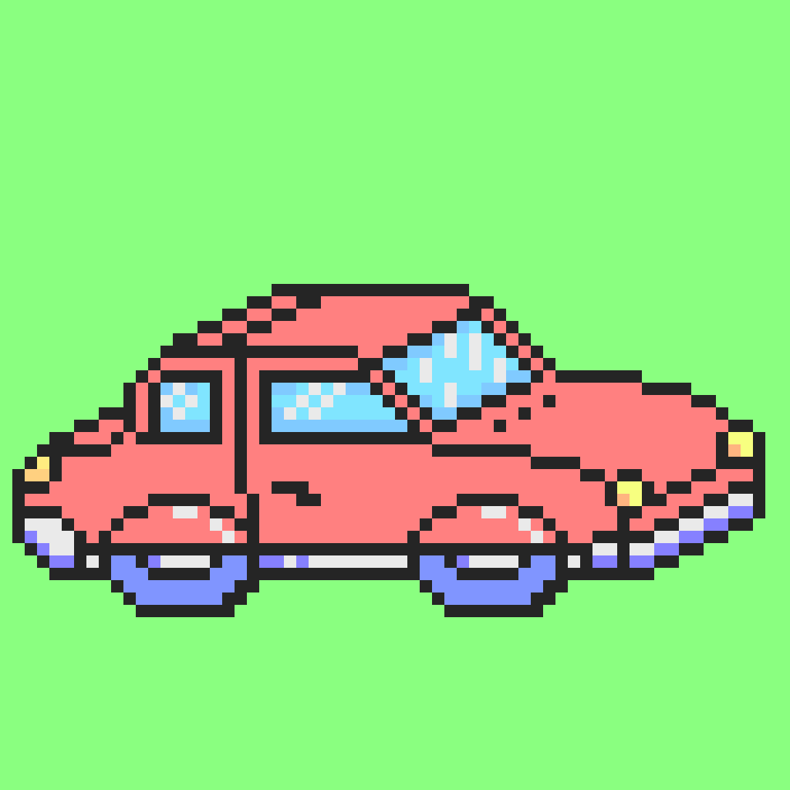
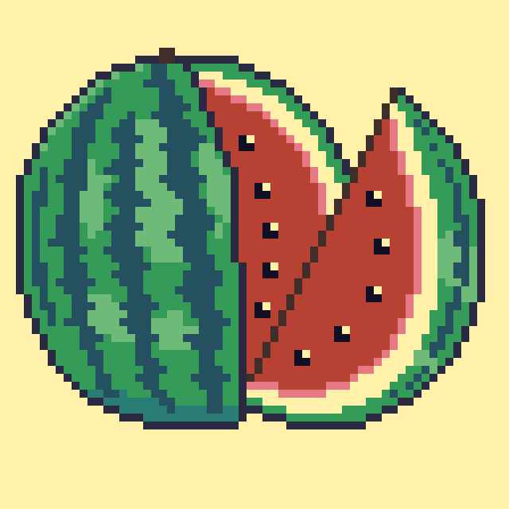
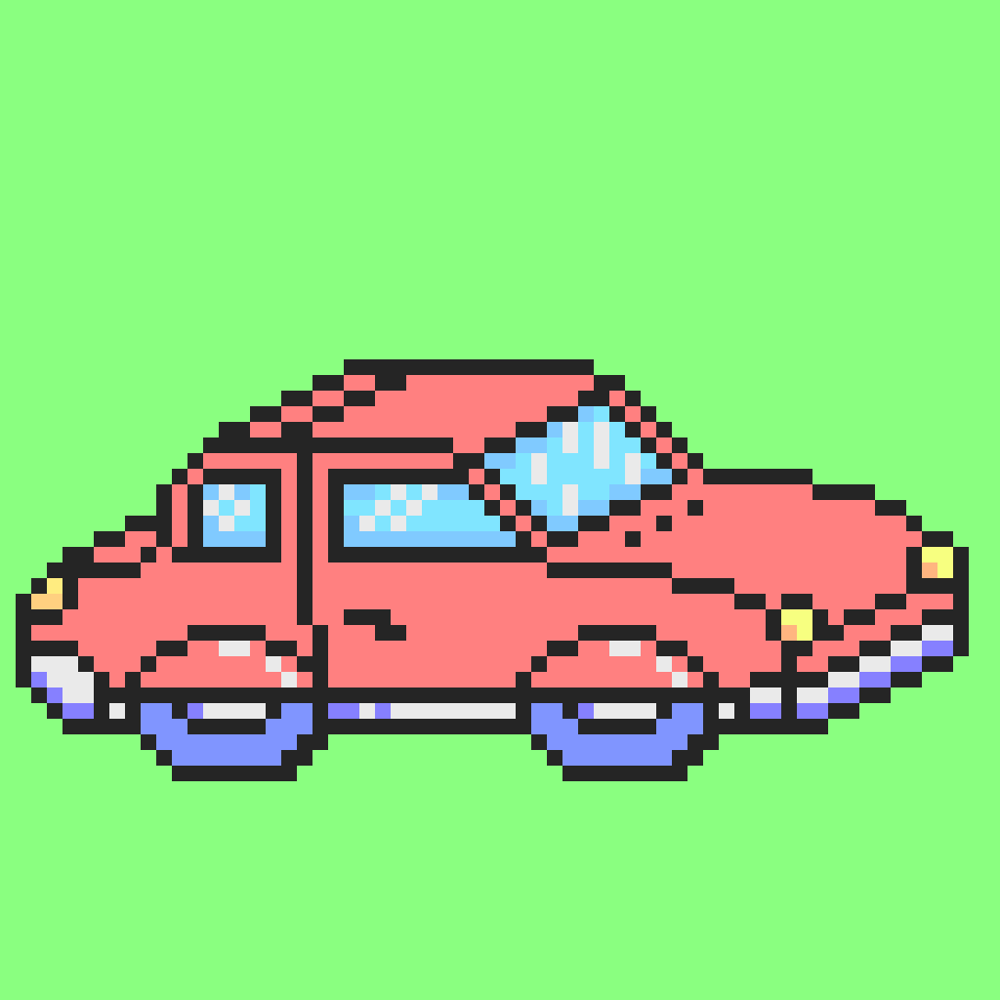
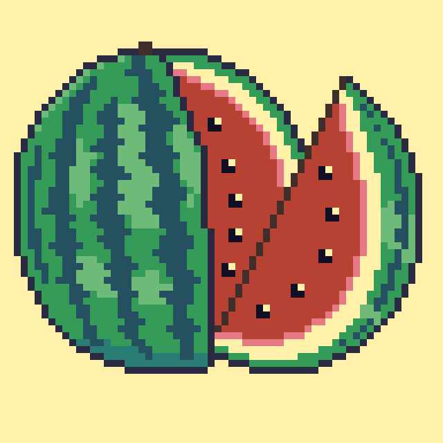
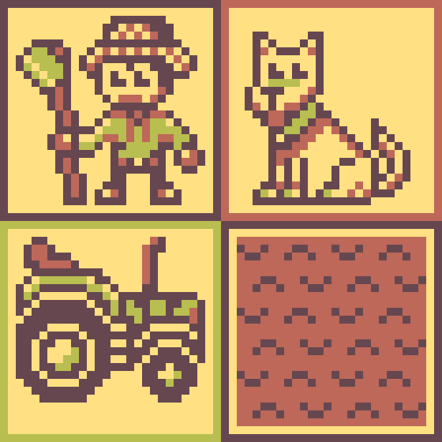
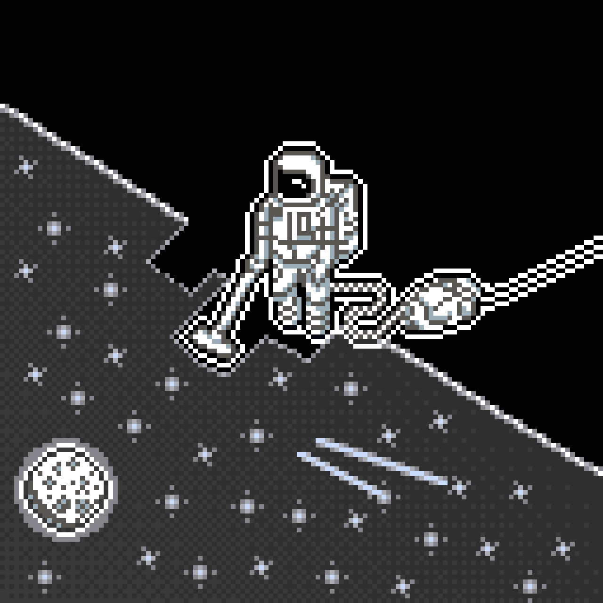
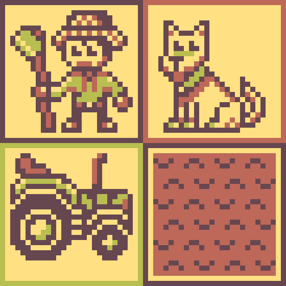
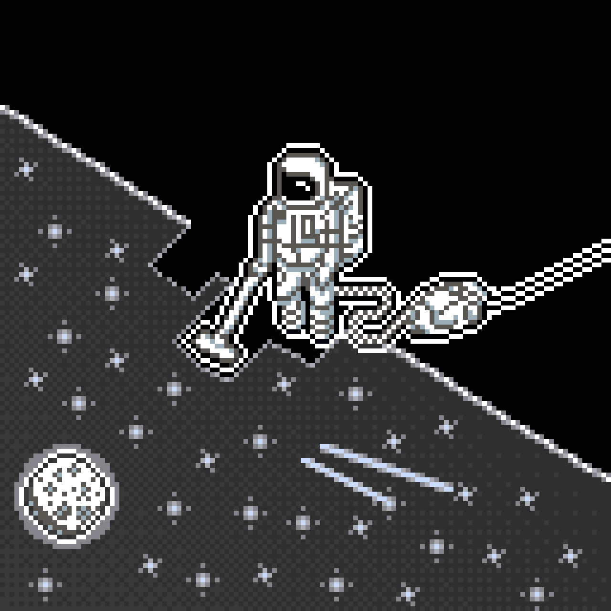

Minhas Pixel Arts
Amostra prática de como a propriedades do FlexBox
reorganizam o conteúdo na página.
Clique nos botões e veja a magia acontecer!
flex-direction = column: Empilha os elementos como se fosse uma coluna.
flex-direction = column-reverse: Faz o mesmo que o column só inverte a ordem de exibição.
flex-direction = row: Organiza os elementos em uma linha horizontal.
flex-direction = row-reverse: Faz o mesmo que o row apenas inverte a ordem de exibição.
flexwrap: Embrulhamento do conteúdo, podemos definir se o conteúdo fica embrulhado ou solto com os atributos wrap e nowrap.
align-items: Alinha o conteúdo com base no eixo vertical, aqui podemos alterar para o atributo flex-start, center ou flex-end.
justify-content: Alinha o conteúdo com base no eixo horizontal, aqui podemos alterar para o atributo flex-start, center ou flex-end.
* Há várias outras propriedades a serem exploradas com o FlexBox, aqui temos apenas alguns dos exemplos mais comuns!
 



 


